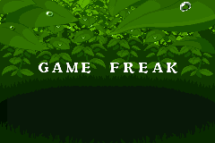
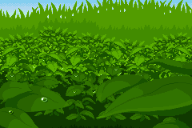
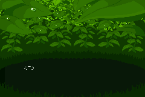
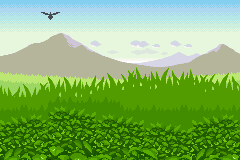

Everything you need to play your Game Boy Advance games on your computer — written in plain, friendly language, with no technical background required.
CrabBoy Advance lets you play Game Boy Advance (and classic Game Boy / Game Boy Color) games on a modern computer — on Linux and Windows.
Think of it as a faithful, high-fidelity Game Boy Advance living inside a window on your desktop. Everything a real console does — the games, the sound, the link cable, even the little light-sensor tricks in some cartridges — works here, and it does so with excellent speed and accuracy.
Beyond faithful reproduction, it adds conveniences no original console had:
You don't need to know any of that to start. You just need your game files.
About your games: CrabBoy Advance is the *player*, not the *library*. It plays game files (called ROMs, with names ending in .gba, .gb, or .gbc) that you own. Like real handhelds, the software doesn't include any games — you load the ones you already have.
Linux:
folder).
tar -xzf crabboy-advance-*.tar.gz
crabboy-advance to start.appears in your menu and double-clicking game files opens them directly: `` ./packaging/linux/install.sh ``
Windows:
crabboy-advance.exe file (it may be in a downloaded folder orarchive — extract it first if it's in one).
If you built the program yourself, it lives at target/release/crabboy-advance (Linux) or target\release\crabboy-advance.exe (Windows). Double-click it — the rest is identical.
When you launch CrabBoy Advance you'll see a window with:
plain-English menus (File, Emulation, Video, Audio, Tools, Help, and more).
That's all you need. Let's load a game.

CrabBoy in action. The moment a game boots, you’ll see real, fully-rendered game screens just like this.
There are two easy ways to start a game:
Method A — Double-click the game file
(works after running the installer on Linux, or after creating a shortcut on Windows): find your .gba file in your file manager and double-click it.
Method B — Open from the menu (works everywhere)
(a .gba, .gb, or .gbc file) and select it.
music, and all.
From here on, everything is play.
Tip: You can leave one game loaded and switch to another at any time with File → Open ROM… — the new game simply takes over the screen.
You don't need a gamepad. The keyboard maps naturally to a Game Boy Advance:
| On the console | On your keyboard |
|---|---|
| D-Pad (Up / Down / Left / Right) | The Arrow Keys |
| A button (the main action) | Z |
| B button (cancel / secondary) | X |
| L shoulder button | A |
| R shoulder button | S |
| Start (confirm, open menus) | Enter |
| Select (back, secondary menu) | Backspace |
If any of these clash with a habit of yours, or you'd like to play with a gamepad instead, open Controls → Configure Controls & Gamepad… and reassign anything. Gamepads are supported automatically — plug one in and it will be recognized.
| Key | What it does |
|---|---|
| P | Pause / resume the game (like turning the console off and on) |
| Space (hold) | Turbo: play at 4× speed — great for skipping long walks |
| F5 | Snapshot — save this exact moment (see [Saving](#5-saving-your-progress)) |
| F8 | Restore your most recent snapshot |
| Ctrl + R | Start the game over from its very beginning |
| F11 or Alt+Enter | Fullscreen / windowed (in fullscreen, the menu bar hides — move your mouse to the top edge of the screen to bring it back) |
| F12 | Save a picture of the current screen |
| F1 | Open the built-in illustrated guide (for Pokémon games) |
There are two different kinds of saving, and both work together. It's worth a moment to understand the difference, because it answers almost every "why did my save disappear?" question.
This is the save the *game* makes — "Save completed" in Pokémon, "Game saved" in your favorite RPG. It's stored in a small file (.sav or similar) that sits next to your game file on your computer.
If you move the game file, move the save file with it.
the program mid-battle), use File → Save Battery (.sav) to force it onto disk.
A snapshot (called a "save state" in emulator-speak) is a frozen picture of the *entire* game at one instant — where you are, your stats, even the exact frame on screen. Press F5 and it's captured; press F8 and you're back there, exactly, milliseconds later.
You get ten snapshot slots (Slot 0 through Slot 9):
handy for keeping "before the boss" in Slot 1 while playing normally.
ten slots, see when each was made, load any of them.
Everyday pattern that works well:
press F5.
Snapshot vs. game save — a one-line rule: use the *game's own save* for your long-term progress (it's what the game expects), and use *snapshots* as your safety net within a session. They don't replace each other — they complement each other.

Walked into trouble? Live Rewind lets you step back through the last few seconds and try the same moment again — no reloading, no waiting.
Snapshots need a moment to set up. Live Rewind is faster: the emulator keeps a rolling memory of the last several seconds of gameplay, and you can walk back through it.
Tab — the game starts rewinding, faster the longer you hold it.down) to rewind.
It's perfect for that split-second where you fumbled a jump or a battle action. Rewind, release, and try it again — the game doesn't know you ever missed.
Rewind memory is cleared if you press Ctrl+R (Reset) — a fresh start comes with a fresh, empty rewind buffer.
The GBA's native screen is small and pixel-art style. CrabBoy Advance can present it beautifully on any modern display. All of this lives under the Video menu.
The single most important choice is Filter / Scaler:
| Option | What you'll see | Good for |
|---|---|---|
| Crisp Pixel (Nearest) | Perfect, sharp, square pixels at any size | Faithful look, fast on any computer — the safe default |
| xBRZ High-Definition | AI-smoothed edges — softer, more "HD" look | Making pixel art look modern; pick a scale (4× is recommended) |
| Smooth (Bilinear) | Gently blurred, classic "soft" scaling | A quick middle ground |
| Retro LCD Grid | A subtle grid, like a real handheld screen | Nostalgia |
| CRT Scanlines | Old-TV scanline effect | Vintage vibe |
Under Scale Preset, you control how big the picture is:
The image scales up in whole-number steps so pixels stay perfectly square.
Then use F11 for fullscreen whenever you want the whole room.
Nudge it until the picture feels right to *you* (0 = off).
real GBA screen looked. Lovely for authenticity.
Purple, Glacier Ice, SP Flame Red) or a Game Boy Player. Pure charm; the on-screen buttons even light up as you press them.
shape than the default 3:2.
A good starting recipe: *Crisp Pixel + Auto Integer + F11 fullscreen.* Then try the other filters whenever curiosity strikes — nothing here is permanent, and every choice can be changed in a click.
The GBA's sound is stereo, but CrabBoy Advance can make it *feel* bigger. Everything lives under the Audio menu.
this creates a natural sense of space in the sound. Comfortable for long sessions; often the best choice at home with cans on.
receiver/speakers, this spreads the game across all six channels with a proper sub-bass channel.
reference choice.
The menu also shows you how many audio channels your computer actually detected, so you can see whether surround will really do anything.
settings; leave them where they are until you want to play.
mute each of the six GBA sound channels, plus a "turbo" mode that keeps the pitch natural while you fast-forward. For tinkerers.
Recommendation: headphones → *3D Binaural*; speaker setup with a surround receiver → *5.1 Surround*; everything else → *Direct Stereo*.
Fast-forward and sound: if the game sounds "chippy" when you hold Space, that's the audio keeping up at 4× speed. Open the mixer (Ctrl+M) and enable the pitch-preserving turbo DSP to smooth it out.
| Action | How |
|---|---|
| Pause the game | P or Emulation → Pause |
| Resume | P again |
| Advance one tiny step at a time (while paused) | F |
| Skip long boring sections | Hold Space (4× turbo) — release to return to normal speed |
| Permanently play at 2× or 4× | Emulation → Speed (1×, 2×, or 4×) |
| Restart the whole game | Ctrl+R |
A few notes:
higher-pitched while it's active — that's the audio trying to keep up. Release the key and everything returns to normal.
farm-chore loops. Not every game handles 4× gracefully; if one looks odd, drop to 2×.
*game saves* and *snapshots* are untouched — you can snapshot before a restart and come back to it later.
These live under Tools. None of them are required — they're the reasons this emulator is a little magic.
Hand the virtual controller to an AI and watch it try to play the game. The agent looks at the screen, decides what to press, and a side panel streams what it *sees*, what it *wants to do*, and which buttons it's holding — in real time.
can reach); there's also a simple built-in autopilot that needs nothing at all.
before you start.
agent's instead of overriding it — nudge it out of trouble and let it drive the rest.
It's wonderfully entertaining on menu-driven games (Pokémon included), and a great party trick.
Paste in cheat codes (GameShark, Action Replay, CodeBreaker) or search the game's memory for values like "gold = 9999" and lock them in place. If you've ever used a cheat code on a console, this works just like that — the code goes in the box, you press add, done.
Play a link-cable multiplayer game (think Pokémon trading or battle) with a second copy of the emulator, with the "cable" wired up inside your computer. The dialog walks you through starting two instances and connecting them.
Press it once to start recording your gameplay as a looping GIF, press it again to stop — the finished file lands in a recordings folder next to the program. Perfect for sharing a clip of a hard-won battle.
One key, one picture of the current screen, saved to disk. (You can choose in the Video menu whether the picture is the enhanced version you're seeing or the raw 1× original.)
Some GBA games include a light sensor, a tilt sensor, or a rumble pack in the cartridge. This emulator emulates all three, with a visual bubble-level for the tilt. Open Tools → Hardware Sensors to see and adjust them. Games that use these features just work — you don't usually need to touch this menu.
A friendly side panel for Pokémon Ruby, Sapphire, and Emerald that reads your in-game party and related data live, so you can glance at your team without digging through menus.
For the obsessive: record frame-perfect input sequences, replay them perfectly, and share them with the speedrunning world. You don't need this for normal play — but it's there if ambition strikes.
An 8-page illustrated Pokémon field guide and trainer's manual, built right into the program — chapters on quick start, controls, visual filters, the companion panel, sensors, multiplayer, and troubleshooting. Browse it with Help → Jump to Chapter, or export it to a PDF with Help → Export PDF Manual to Disk….

Exploring the open world. Scenes like this are where the Pokémon Companion, the AI Agent Player, and your own creativity all come together.
CrabBoy Advance checks for new versions in the background when it starts, and tells you in the Update tab in the menu bar when something new is available.
click Update Now, watch the download, then click Restart when it's ready. Your settings and saved games are not affected.
file is genuine.
Everything stays in predictable, findable places:
| Thing | Where it lives |
|---|---|
| Game files (.gba/.gb/.gbc) | Wherever you keep them — e.g. a Games folder |
| Game's own save files (.sav etc.) | Automatically created *next to the game file* |
| Snapshots (save states) | A saves folder next to the program (files like YourGame_slot0.state) |
| GIF recordings & AI session logs | A recordings folder next to the program |
| Screenshots | A screenshots folder created by the app (a toast message tells you the exact name and location every time) |
Before moving or deleting things: keep the saves, recordings folders and any .sav files with their games. Those *are* your progress.
"The screen is black / the game froze after a scene transition."
Restart the game (Ctrl+R). If it happens in the same spot every time, check Update → Check for Updates Now — many of these exact situations have been fixed in recent versions. If it persists, a snapshot taken just before the trouble spot (F5) lets you retry from there.
"My save is gone."
Two usual causes:
come along. Move it back together.
vice versa. Remember: the game's save is long-term; snapshots are session safety nets. Use File → Save Battery (.sav) to force the game's save to disk when in doubt.
"No sound."
share of the mix.
game's scene run a couple of seconds; audio resumes with the game.
"Sound is weird when I fast-forward."
Expected — the game is running 4× as fast. Release Space to return to normal, or enable the pitch-preserving turbo in the mixer (Ctrl+M).
"The picture looks blurry or stretched."
In Video: set Filter to Crisp Pixel (Nearest) and Scale Preset to Auto Integer (Pixel-Perfect). That combination is pixel-perfect by construction.
"A gamepad doesn't work / the wrong button is pressed."
Open Controls → Configure Controls & Gamepad…, make sure the correct device is selected, and re-map any button that feels off.
"I want to play a Game Boy / Game Boy Color game."
They work — just open the .gb or .gbc file the same way. The Game Boy menu tells you which system is currently running and can force classic Game Boy mode if a Game Boy Color game wants it.
"The AI player says it can't reach the server / shows an error."
The AI needs a vision-capable AI model to talk to. In the dialog, click Test Connection — it will tell you plainly whether the endpoint answered and which model responded. The built-in heuristic autopilot works with no server at all, so you can still watch the agent play.
"Is there a version for my other computer / platform?"
Official builds are for Linux x64 and Windows x64. The Update center automatically picks the right one for the computer it's running on.
"Something else is off."
A few universal rescues, in order:
That sequence resolves the overwhelming majority of "the game is stuck" situations.
| Term | Plain meaning |
|---|---|
| ROM | Your game file — a .gba, .gb, or .gbc file that the emulator plays |
| Save / .sav | The *game's own* progress file, kept next to the game |
| Snapshot / save state | An instant frozen picture of the whole game (F5/F8) — your undo button |
| Slot | One of the ten separate snapshot spots you can save into |
| Turbo / fast-forward | Holding Space to play at 4× speed |
| Rewind | Holding Tab to walk backwards through the last few seconds |
| Cheat code | A short string (like 30021000 00000064) that changes a value in the game — health, gold, a level |
| Link cable | The old way of connecting two consoles for multiplayer; here it's virtual and inside your computer |
| xBRZ | A "make pixel art look HD" picture filter |
| Bezel | A decorative console frame drawn around the screen |
| TAS | "Tool-Assisted Speedrun" — frame-perfect input recording and replay |
| AI Agent Player | A mode where an AI watches the screen and plays the game, with a side panel narrating its thoughts |
CrabBoy Advance is deliberately *more* than a Game Boy Advance — but it is first and foremost a Game Boy Advance. If you forget every menu in this manual, remember only three things:

Your adventure, on your terms. CrabBoy gives you the tools — the journey is yours to take.
Happy playing. 🦀
*CrabBoy Advance is an open-source Game Boy Advance emulator written in Rust. This manual covers version 0.5.0. For the full technical specifications, see the project's README; for in-game strategy, the built-in Trainer's Guide (F1).*